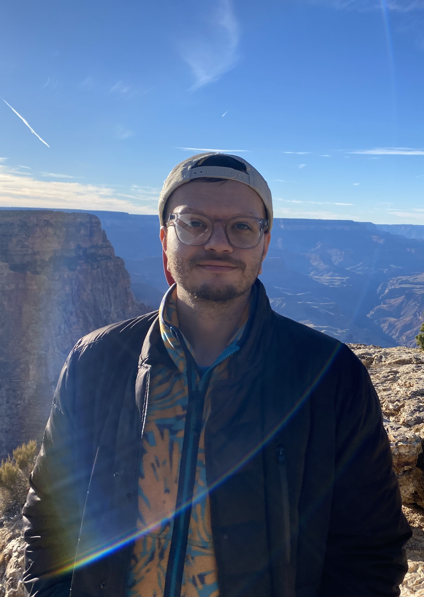

I'm Logan. My goals for ATLS 2200 - Web are to gain a basic understanding of programming for the Web and to become more familiar with the use of online applications/programs like interactive ArcGIS maps.
I'm a Landscape Architecture major and I'm also pursuing minors in Evolutionary Biology and Creative Technology! If I wasn't doing this, I would probably be a gardener or I would just find a way to hike for a living. I use he/him and they/them pronouns.
 favorite video